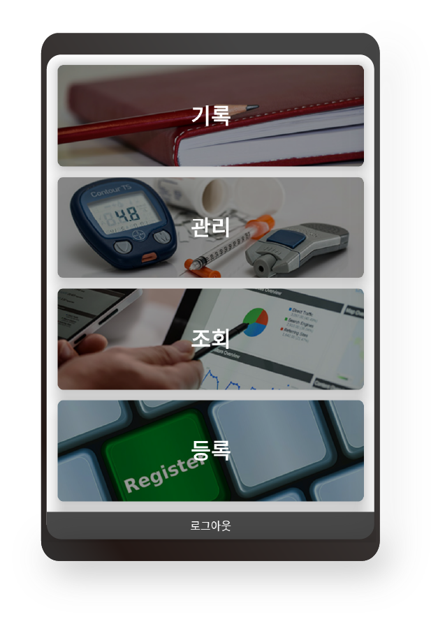

메인 메뉴
로그인을 하였을 때 보게되는 간호사용 메인 메뉴입니다.
기록, 관리, 조회, 등록을 누르면 각 세부 메인 메뉴로 넘어가게 됩니다.
간호사가 메인 메뉴에서 기록을 누르고 기록할 환자를 선택한 후 보게되는 기록 메인 메뉴입니다.
블루투스를 통한 Vital Sign 측정과 복용 약, 식사, 특이사항(증상), 사진 등 보호자들이 필요로 하는 정보를 기록하는 곳 입니다.
블루투스를 통한 Vital Sign 측정 입니다. 측정기기(블루투스)가 연결이 완료되면 체온과 맥박을 측정할 수 있습니다.
수기를 통한 측정치 기록의 오류를 없애기 위해 측정완료 후 저장버튼을 누르면 자동으로 환자의 기록 데이터에 입력이 됩니다.

환자가 복용하고 있는 약들의 복용 여부를 기록하는 화면입니다.
현재 복용하고 있는 약들의 목록이 보이고 상세보기를 통해 정보확인도 가능하며 환자가 약을 복용했을시 복용 버튼을 통해 복용여부를 기록할 수 있습니다.
식사 여부 기록 화면입니다. 환자 건강에 이상이 없을 시에는 병원식사를 환자에게 특이사항이 생겼을 시에는 미음을 선택하여 식사여부를 기록할 수 있습니다.

특이사항 기록 화면입니다. 환자에게 특이사항이 발생하였을 경우 목록에서 추가를 통해 Nearby에서 수집해놓은 증상들을 선택하여 추가가 가능하며, 그 이외의 특이사항 또한 기타 특이사항 추가 버튼을 통해 기록이 가능합니다.
사진 기록 화면입니다. 보호자들이 늘 그리워하는 환자들의 사진을 Nearby 사진기록 기능을 통해 기록할 수 있습니다.
환자의 의료 정보를 관리하는 메뉴입니다. 환자별 증상 관리, 복용 약 관리, 몸무게 등 환자의 의료정보의 변화가 있을 시 이를 관리할 수 있습니다.
증상 관리 화면입니다. 환자의 주요 증상(입원 증상)에 변화가 있을 때 해당 화면을 통해 관리가 가능합니다.증상이 완치되었을 시에는 해당 증상의 완치버튼을 통해 비활성화 시킬 수 있습니다. 추가 증상 발현시 증상 추가 버튼을 통해 추가할 수 있습니다.


복용 약 관리 화면입니다. 환자가 복용해 오던 약에 변화가 있을 시에 해당 화면을 통해 관리가 가능합니다. 증상완치로 복용을 중지할 때에는 복용 완료를 통해 비활성화 상태로 전환 가능하며, 약 추가 버튼을 통해 상세 정보를 기입한 후 복용 약을 추가할 수 있습니다.
몸무게 관리 화면입니다. 환자의 몸무게를 기입할 수 있으며 측정시가 마다의 변화 추이를 볼 수 있는 그래프를 볼 수 있습니다.
보호자들과 간호사들이 보게 될 조회 메뉴입니다. 조회 메뉴를 통해서 보호자들은 환자들의 실시간 정보를 언제 어디서든 조회하여 환자의 곁에 있는 안심을 얻을 수 있습니다.
조회는 크게 항목별(기록 메뉴)조회와 일자별 조회가 있습니다.
항목별 조회는 Vital Sign, 약 복용 여부, 식사 여부, 특이 사항, 사진, 연관 간호사 버튼을 통해 각각의 항목들을 일자별로 조회할 수 있습니다.
일자별 조회를 통해 일자별로 환자의 의료 정보를 조회할 수 있습니다.
기록이나 관리 메뉴를 통해 환자의 의료 정보에 변화가 있을 시 자동으로 해당 날짜가 생성되며 날짜 버튼을 선택하여 해당 날짜에 발생한 기록과 관리 정보를 조회 할 수 있습니다.

복용 약 관련 화면(복용 약 관리, 항목별 조회, 일자별 조회)에는 상세보기 버튼이 있습니다. 상세 보기를 통해 복용 기간, 처방 받은 약의 정보를 확인 할 수 있습니다.
약의 정보를 상세히 확인할 수 있는 화면입니다. 해당 약의 이미지, 용법 및 용량, 제조사 등 환자가 처방 받은 약의 상세 정보를 조회할 수 있는 화면입니다.

환자별 보호자 등록 화면입니다. 환자마다 보호자 추가 버튼을 통해 보호자를 연결하고 연결된 후 보호자는 환자의 정보를 조회할 수 있는 권한이 생깁니다.


{kind=link}